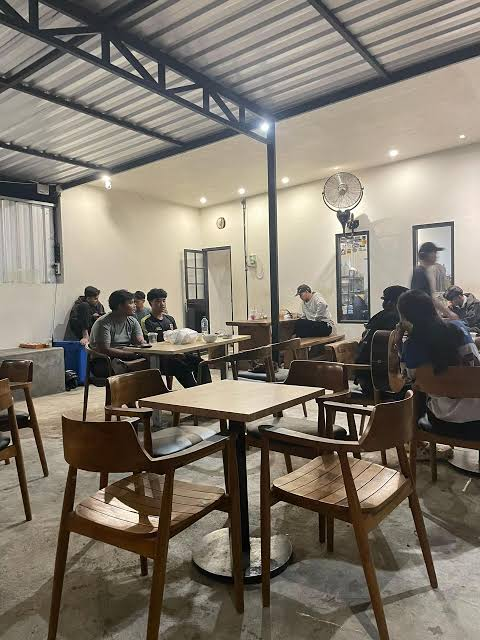
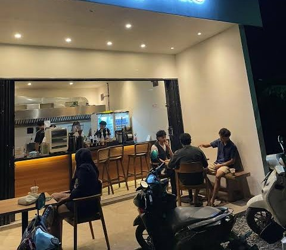
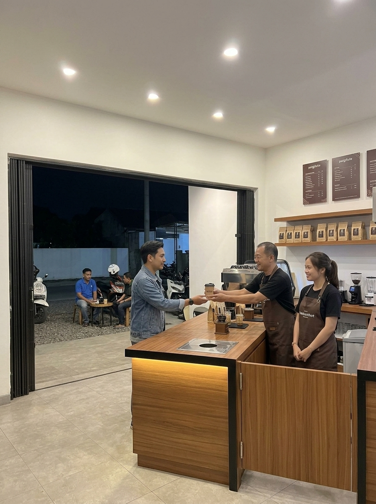
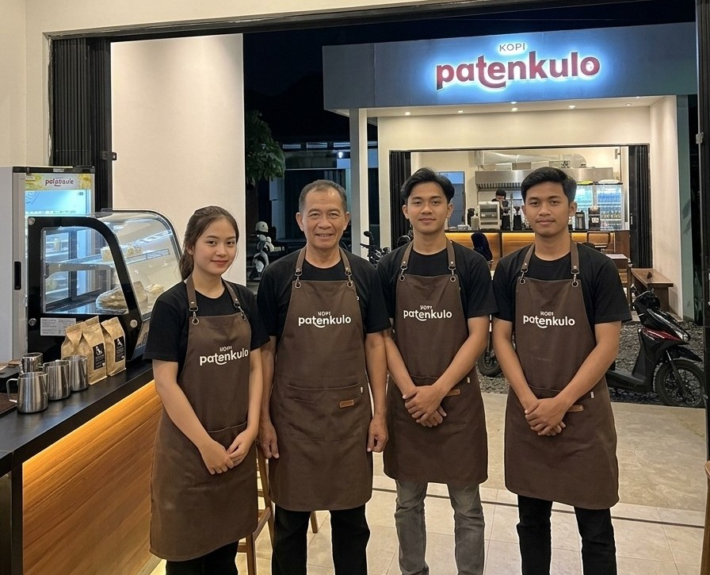

UMKM Pekalongan
Galeri Kopi Paten Kulo
Lihat lebih dekat dengan suasana kedai, dan cerita di balik setiap cangkir Kopi Paten Kulo.

Suasana Kedai


Tim Kami


Sambutan Tim Kopi Paten Kulo
Tempat Singgah Terhangat - Jingle Kopi Paten Kulo
Jingle Kopi Paten Kulo untuk menemani suasana di kedai.